Five floors, four classes, six themes, and a weekly boss had to read as one short session.
Delve prototype · daily return loop · product design
A daily dungeon game: easy enough for coffee, worth coming back to.
A short daily dungeon run built to feel easy on the eyes and easy to return to, whichever time of day you open it.
I was thinking about the habit created by Wordle, LinkedIn's daily games, and Chess.com's daily puzzles: something quick enough to open casually, but satisfying enough to compare with friends. I wanted to mix that with the feeling of an RPG dungeon crawl. Delve is a personal prototype built around that return loop.
The boundary
A short run, a shared weekly world, and a reason to return.
Delve combines the quick habit of a daily puzzle with the feeling of an RPG dungeon crawl: one short run, a risky choice, a shared weekly world, and a Trophy Hall that gives the next day a reason to exist.
5
floors in a normal run
4
classes with different route identities
6
themes built around the same readable controls
1
weekly lair, with a Friday boss
The full gameplay loop
A full run makes more sense when you can see every beat.
These are real screenshots from the retained Delve v15 build, ordered from the first choice through the end of the week. The playable local build is still clearing a release check, so the product loop is shown here rather than presented as a public demo.
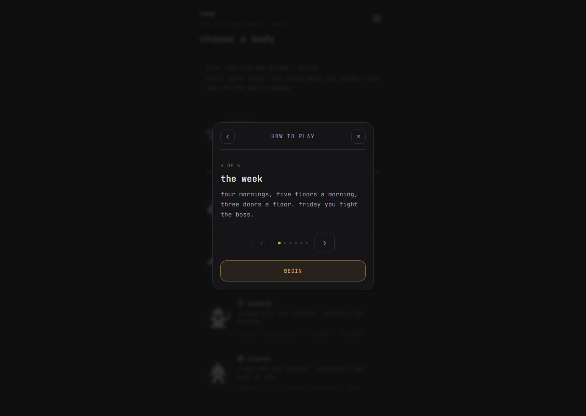
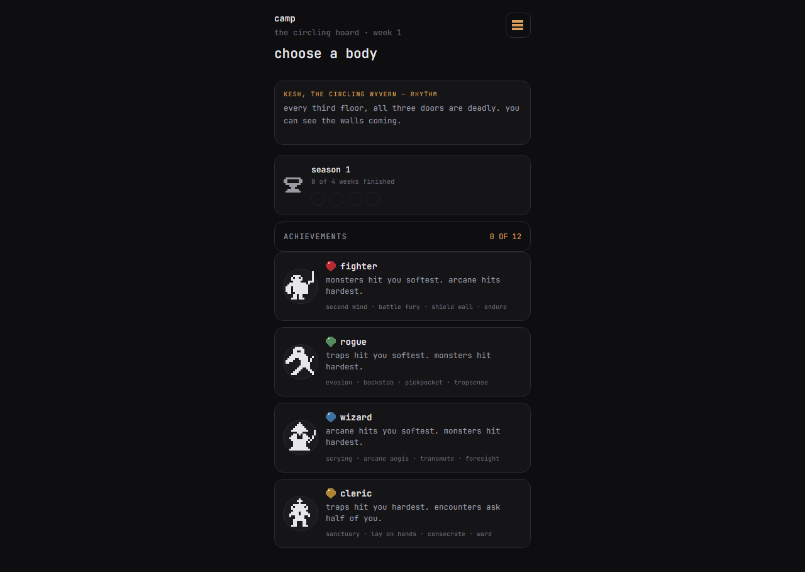
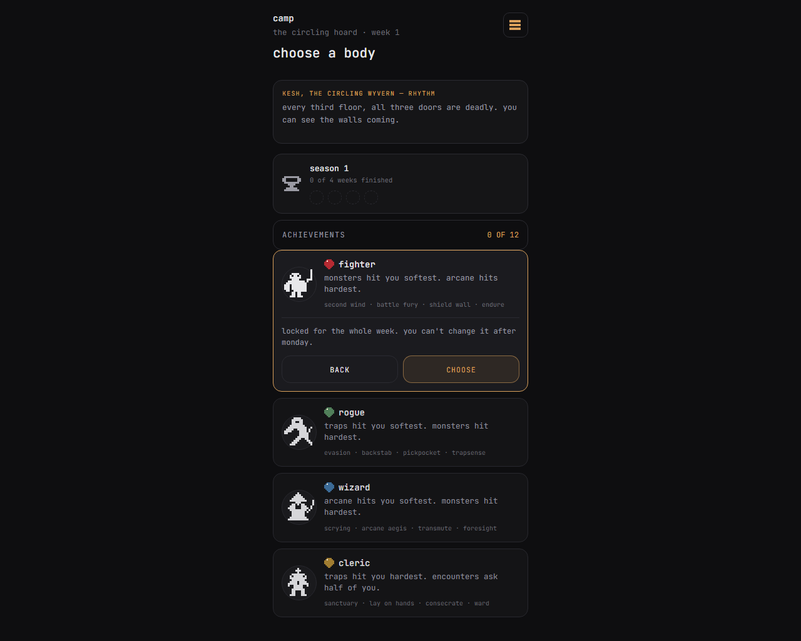
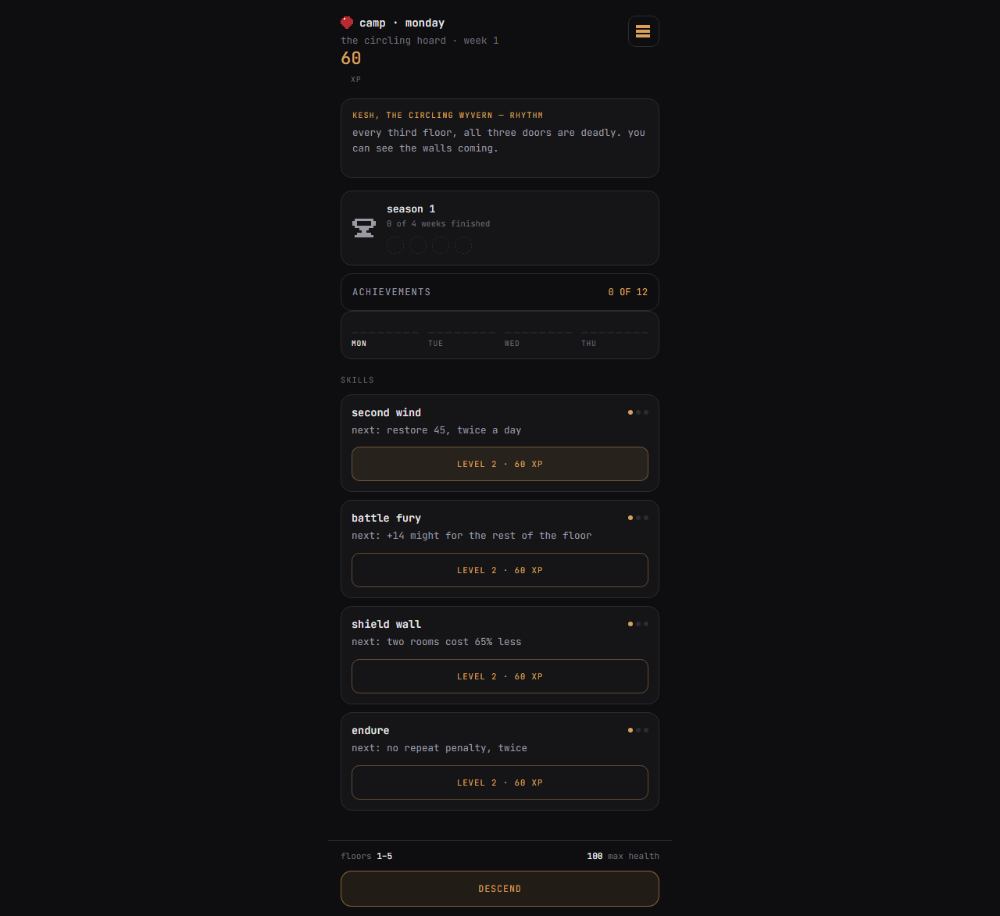
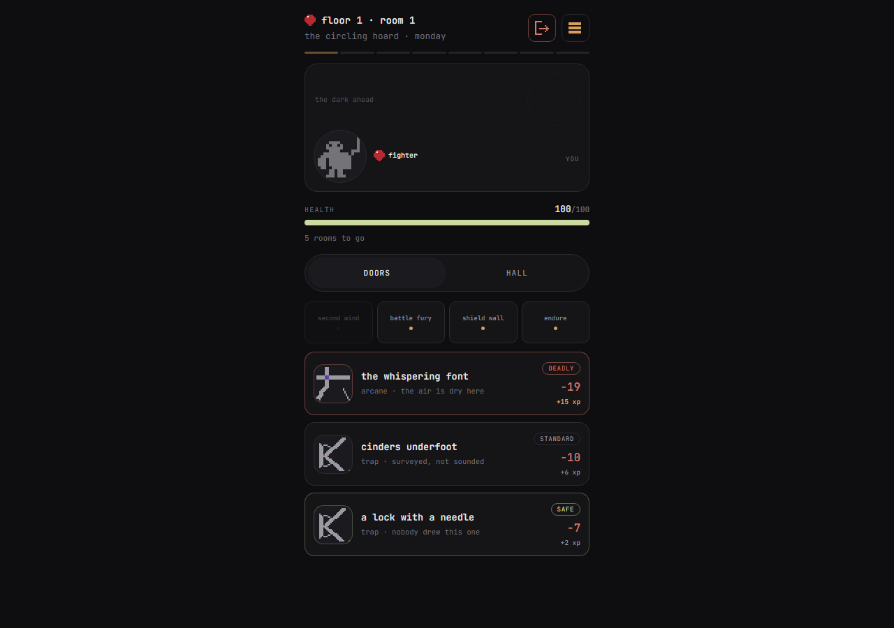
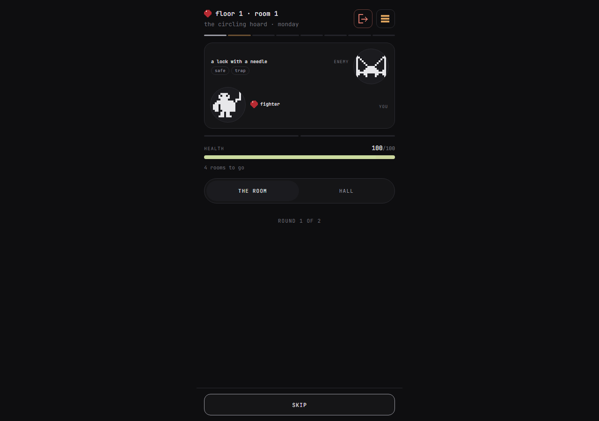
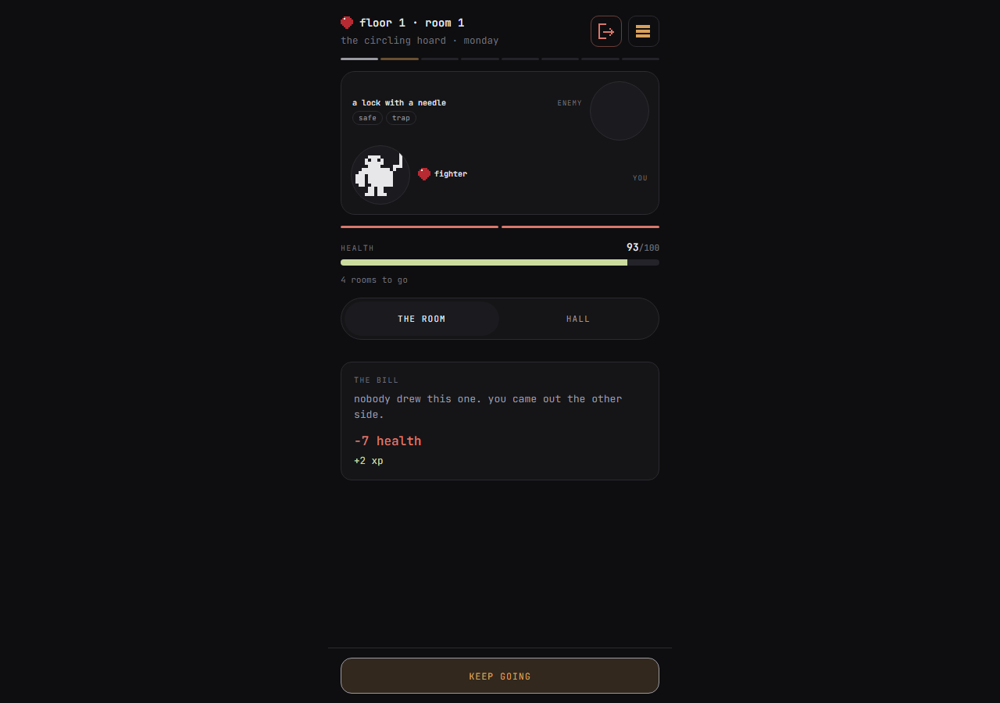
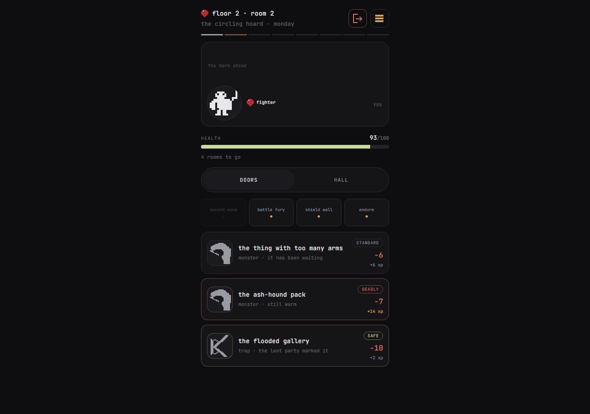
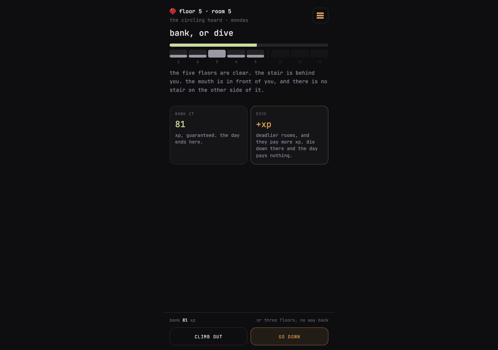
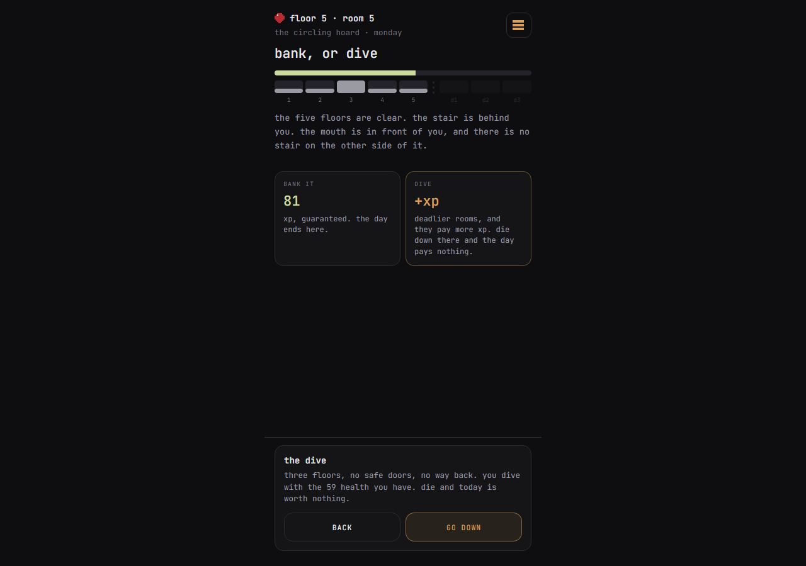
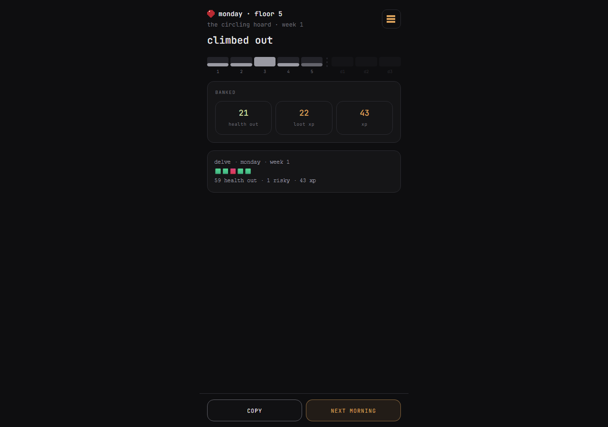
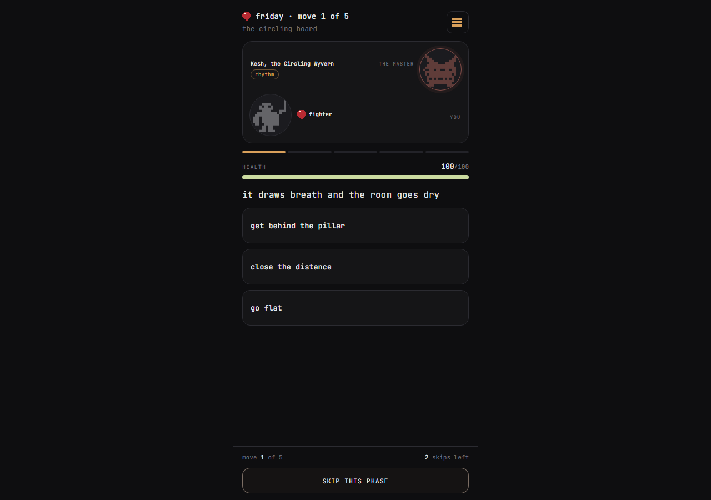
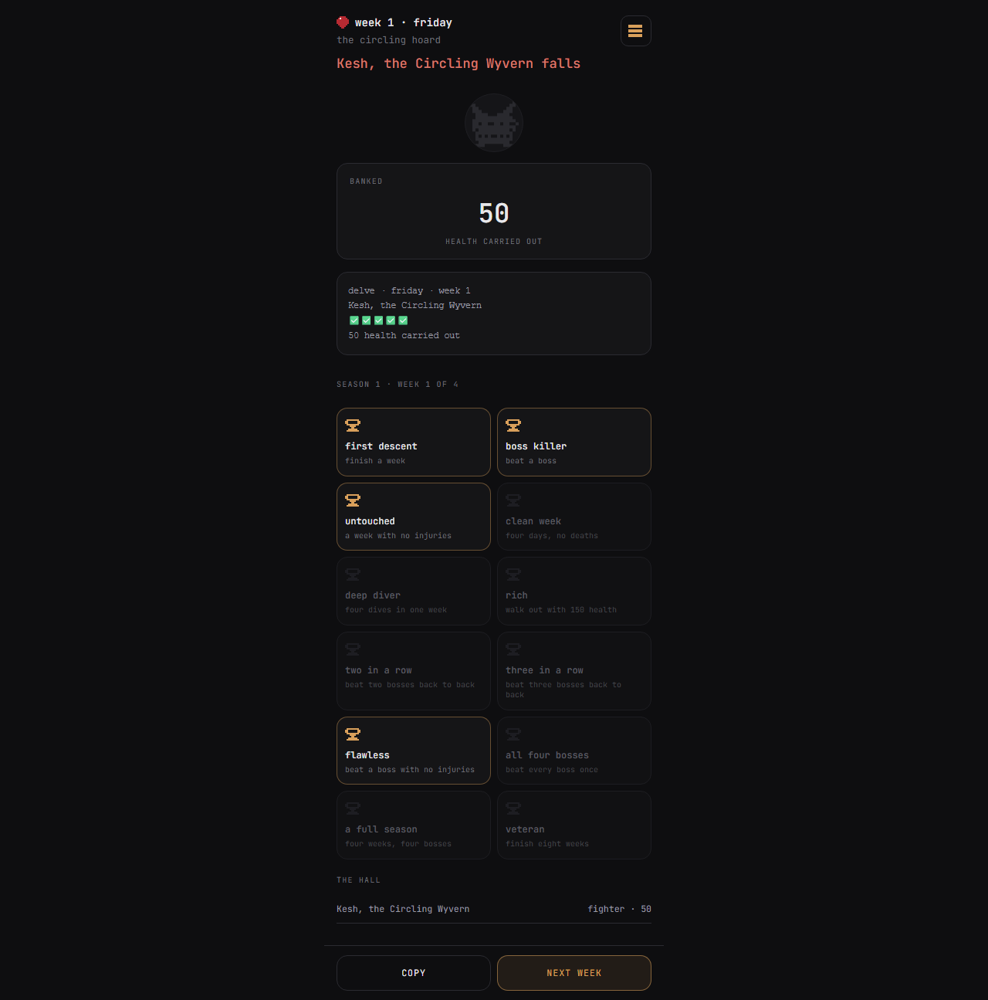
1 of 13
Why I wanted to make it
Casual to start. Hard to master. Fun to compare.
A player picks a class, enters the same seeded lair as everyone else, chooses between three visible doors per floor, and clears a short weekday descent. The basic run should be approachable enough to finish casually. The depth comes from the route: which risks you take, which abilities you find, and whether you save enough to face Friday's boss.
That is the mix I wanted: a daily game with no long session requirement, but enough identity that a result can start a conversation in a group chat. You can play it quickly, then come back because your friend took a different route or because the Trophy Hall still has something missing.
The loop in one sentence
Five floors, one shared weekly seed, four classes, and a Friday boss give a casual player a complete session and a committed player a harder route to compare.
Comfort is part of the design
One readable loop, six visual moods.
The layout and controls stay stable while neutral, cool, sage, warm, plum, and ash themes change the feel of the lair. The Minimal direction removes decorative weight so the next choice stays easy to scan.
Seasonal rotation is a documented next idea, not shipped adoption.
What it took
The small loop took more judgment than the feature list suggests.
The build is verified locally, but its release metadata and public-readiness checks are not finished.
I would validate the release boundary earlier, before polishing exploratory screens.
It shows product judgment—what to keep, what to cut, and what not to claim yet.
The release boundary
Small on purpose. Honest about what is next.
A working build is not a finished product.
01 / Prototype
A personal prototype
This is a fun, small game project. The claim is the build and release discipline, not commercial success, user growth, retention, or revenue.
02 / Pre-release
Not a finished public release
The evidence is a verified local build plus active UI work; public release is a separate gate.
03 / Next gate
Reach still needs proof
Audience understanding and the next feature both need evidence.
Delve belongs here as a build story: product thinking, iteration, and release discipline without pretending a local build is a market result.
Why it belongs here
I built a game because I wanted to play it.
Delve is a personal experiment in making a small daily experience feel worth opening, worth sharing, and worth returning to.
The common thread with my marketing work is still there: make the experience clear, make the system coherent, and be honest about the distance between a good build and a proven audience.
If this sounds like your kind of thing
Let’s build something small.
The habit of shipping something small and complete is the same one I bring to client work.